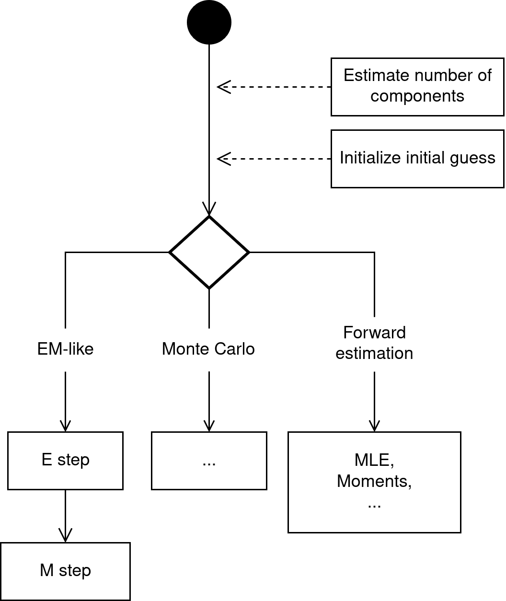
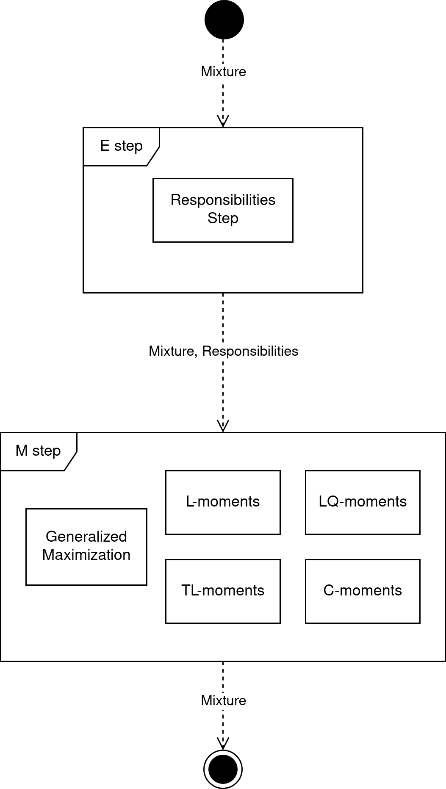

Дерево алгоритмов¶
Основным понятием, являющимся центром всей архитектуры модуля алгоритмов, является “дерево алгоритмов”, показывающее то, как система выполняет пошаговый процесс оценки параметров: от предварительной настройки до выбора и выполнения одного из доступных семейств алгоритмов.
{kind=link}

Процесс можно разбить на следующие логические этапы:
Начало и предварительная настройка:
Процесс начинается с получения входных данных (выборка, для которой мы хотим оценить смесь).
Перед запуском основного алгоритма выполняются два ключевых подготовительных шага, которые предоставляют начальные условия:
Estimate number of components (Оценка числа компонент): Определение предполагаемого количества компонент в смеси.
Initialize initial guess (Инициализация начального приближения): Задание стартовых значений параметров для алгоритмов.
Выбор семейства алгоритмов (Точка ветвления):
На основе конфигурации или выбора пользователя, система переходит к одному из трех основных семейств алгоритмов (обозначено ромбом). Это ключевая точка, обеспечивающая гибкость системы.
Исполнение алгоритма:
Ветвь EM-like (EM-подобные алгоритмы):
Представляет итеративные алгоритмы, основанные на максимизации ожидания.
Классический цикл состоит из двух шагов: E-step (Expectation) и M-step (Maximization), которые повторяются до сходимости.
Ветвь Monte Carlo (Методы Монте-Карло):
Представляет алгоритмы, основанные на стохастическом сэмплировании (например, MCMC).
Внутренняя структура этих методов пока что не рассматривается и здесь обозначена многоточием (…)
Ветвь Forward estimation (Прямое оценивание):
Представляет неитеративные методы.
Примерами таких методов являются MLE и Метод моментов.
EM-like¶
Как было показано в общей архитектуре “дерева алгоритмов”, одной из ключевых стратегий оценки является EM-like. Данная диаграмма детализирует внутреннюю структуру этого итеративного процесса.
{kind=link}

Процесс состоит из двух фундаментальных шагов, выполняемых последовательно в цикле: E-step (шаг ожидания) и M-step (шаг максимизации):
E-step (Шаг ожидания):
Вход: На вход шага поступает текущее состояние модели смеси (Mixture).
Задача: Основная задача этого шага, названная Responsibilities Step, — вычислить “ответственность” (responsibilities) каждой компоненты смеси за каждую точку данных. По сути, это оценка скрытых (latent) переменных — вероятностей того, что \(i\)-ая точка данных принадлежит \(k\)-ой компоненте.
Выход: Результатом являются вычисленные “ответственности”, которые вместе с исходными данными передаются на следующий шаг.
M-step (Шаг максимизации):
Вход: На вход поступают данные и вычисленные на E-шаге “ответственности”.
Задача: Цель этого шага — обновить параметры \(\Theta, \Omega\) модели смеси.
Архитектурная особенность: Вместо жестко закодированной процедуры максимизации, система предлагает несколько взаимозаменяемых стратегий:
Generalized Maximization: Обобщенный метод максимизации правдоподобия.
L-moments, LQ-moments, TL-moments, C-moments: Набор специализированных методов, использующих различные виды моментов (L-моменты и их вариации) для оценки параметров. Это позволяет адаптировать алгоритм под специфические свойства данных или требования к робастности.
Завершение итерации:
Выход: На выходе M-шага мы получаем обновленную модель смеси (Mixture).
Эта обновленная модель затем используется как входная для следующей итерации E-шага. Цикл “E-step -> M-step” повторяется до тех пор, пока не будет достигнут критерий останова. В конце каждой итерации происходит “pruning” смеси, отсекая ненужные компоненты (например те, которые вносят почти нулевой вклад в смесь).
Monte Carlo¶
Пока что не рассматривались.
Forward estimation¶
Эта ветвь объединяет неитеративные методы оценки параметров смеси. В отличие от EM-алгоритмов, которые уточняют параметры шаг за шагом, методы прямого оценивания вычисляют их напрямую на основе свойств выборки.
Основными представителями этого семейства являются Метод Максимального Правдоподобия (MLE) и Метод Моментов (Method of Moments).
Метод Максимального Правдоподобия (Maximum Likelihood Estimation, MLE)¶
Идея: Метод заключается в поиске таких параметров модели (\(\Theta\) и \(\Omega\)), при которых наблюдаемые данные являются наиболее “вероятными”.
Процесс:
Формирование функции правдоподобия: Для смеси распределений функция правдоподобия \(L(\Theta, \Omega~|~ x)\) строится на основе функции плотности \(f(x ~|~ \Theta, \Omega)\).
Максимизация: Находится максимум логарифма этой функции.
Метод Моментов (Method of Moments, MoM)¶
Пока что не рассматривался.